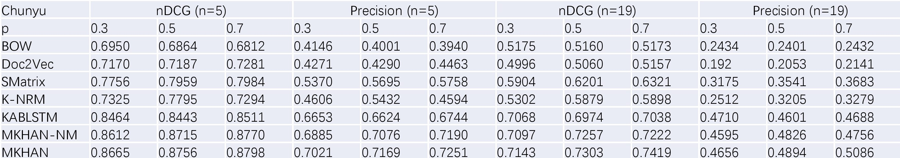
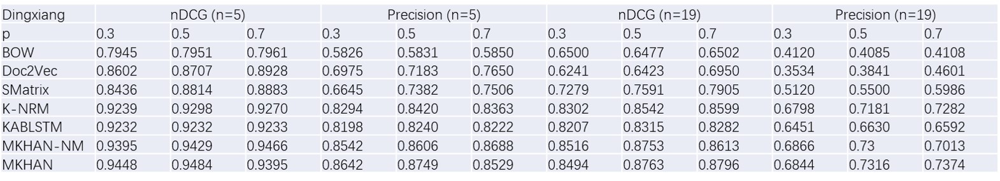
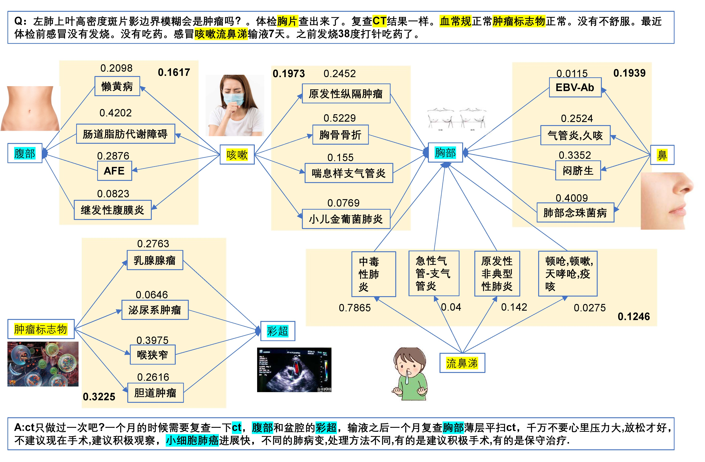
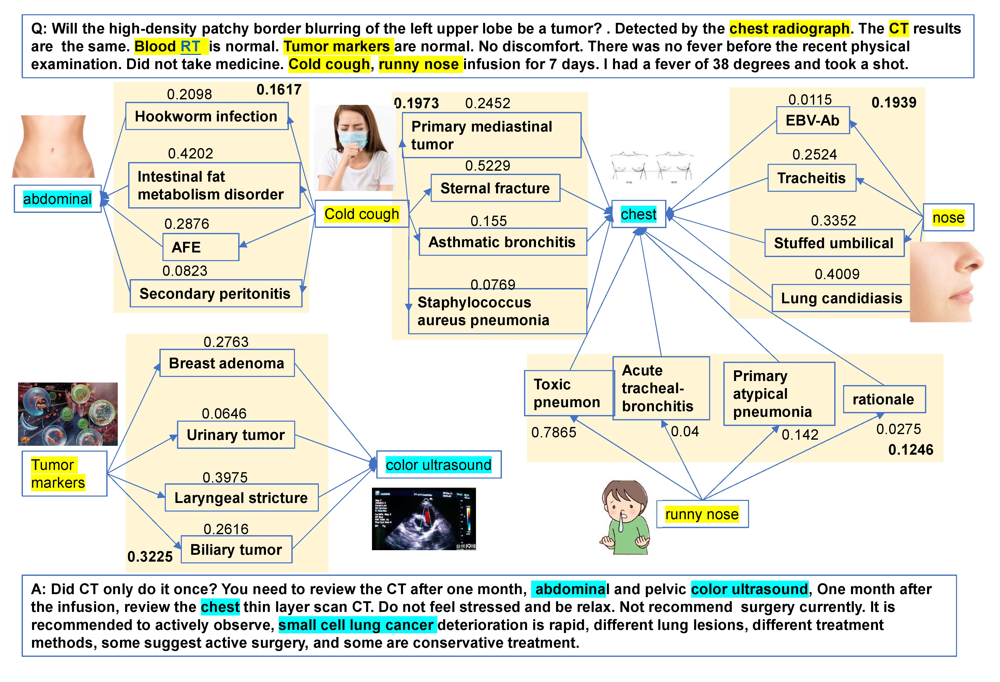

Multi-modal Knowledge-aware Hierarchical Attention Network
for Explainable Medical Question Answering
Introduction
Online healthcare services can offer public ubiquitous access to the medical knowledge, especially with the emergence of medical question answering websites, where patients can get in touch with doctors without going to hospital. Explainability and accuracy are two main concerns for medical question answering. However, existing methods mainly focus on accuracy and cannot provide a good explanation for retrieved medical answers. This paper proposes a novel Multi-Modal Knowledge-aware Hierarchical Attention Network (MKHAN) to effectively exploit multi-modal knowledge graph (MKG) for explainable medical question answering. MKHAN can generate path representation by composing the structural, linguistics, and visual information of entities, and then infer the underlying rationale of question-answer interactions by leveraging the sequential dependencies within a path from MKG. Furthermore, a novel hierarchical attention network is proposed to discriminate the salience of paths in connecting entities in a question-answer pair,endowing our model with explainability. We build a large-scale multi-modal medical knowledge graph andtwo real-world medical question answering datasets, the experimental results demonstrate the superior performance on our approach compared with the state-of-the-art algorithms.
Compared with existing methods, our framework has several advantages:
- We are among the first to study on explainable medical question answering over multi-modal knowledge graph, which is challenging on both data acquisition and model design. We propose a novel Multi-modal Knowledge-aware Hierarchical Attention Network (MKHAN), which utilizes the domain knowledge to explain the retrieved answer. It explains the proper answer by performing reasoning over multi-modal knowledge graph, and discriminating the strengths of paths with hierarchical attention network.
- We build a multi-modal knowledge graph which incorporates structural, linguistic and visual features to learn the representation of entities and relations.
- We build two large scale real-world Chinese medical question answering datasets, and evaluate our proposed model on them. Compared with the state-of-the-art methods, our approach not only improves the accuracy, but also holds the explanation capacity.
Path Representation based on Multi-modal Knowledge Graph
Figure 1 Path Representation based on Multi-modal Knowledge Graph
Path Reasoning via Hierarchical Attention Network
Figure 2 Path Reasoning via Hierarchical Attention Network.
Dataset

pwd: r5jo
| #Type | #Rel |
#Triples |
#Images |
|---|---|---|---|
| 6 | 17 | 59882 | 741935 |
pwd: sygq
| #Dataset | #QA pairs |
#Avg. Q-Len |
#Avg. A-Len |
#Clinics |
|---|---|---|---|---|
| Chunyu | 245085 | 32 | 75 | 16 |
| Dingxiang | 273003 | 115 | 284 | 25 |
Results
Noise Image Filtering Results

Retrieval Accuracy
Chunyu Dataset：

Dingxiang Dataset:

Reasoning Expample (Chinese)

Reasoning Expample (English)
